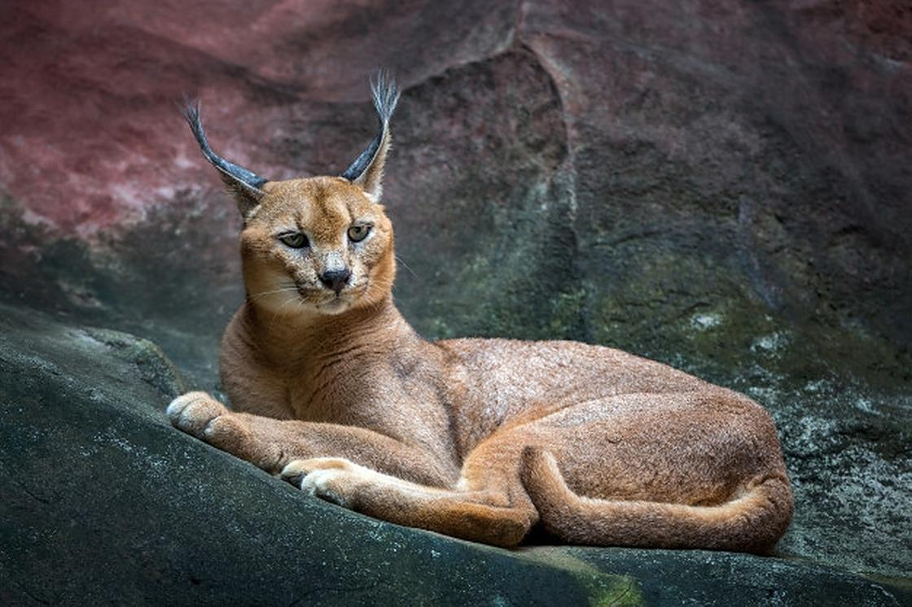

Ла́ска, или обыкнове́нная ла́ска (лат. Mustela nivalis) — хищное млекопитающее семейства куньих, вид рода ласки и хорьки (Mustela). Водится на всех континентах Северного полушария. Шерсть ласок дорогая, так как ласки редко встречаются в Европе.
Карака́л, или степная рысь (лат. Caracal caracal, от тюркского «қара құлақ» — «чёрное ухо»), — хищное млекопитающее семейства кошачьих. Долгое время каракала относили к рысям (Lynx), на которых он похож внешне, однако из-за ряда генетических особенностей его выделили в отдельный род.
Лесной кот, или лесна́я ко́шка, или ди́кая ко́шка, или ди́кий кот, или европе́йская ко́шка, или европе́йский кот (лат. Felis silvestris от лат. fēles (fēlis) — «кошка», лат. silvestris — «лесной, находящийся, живущий или растущий в лесу, дикий, дикорастущий») — хищное млекопитающее из семейства кошачьих. В таксономии продолжаются споры, относятся ли европейские, азиатские и африканские дикие кошки к разным видам или подвидам.

Флами́нго (лат. Phoenicopterus) — род птиц из семейства фламинговых отряда фламингообразных.Краснокрылые птицы, однако единственным действительно красным представителем является красный фламинго. Розовый фламинго почти полностью белый, в розовыми кончиками перьев, а также розовыми кроющими перьями крыла и лопаточными перьями.
Лиси́ца — это хищное млекопитающее, относится к отряду хищные, семейству псовые. Латинское название рода лисицы, по всей видимости, произошло от искаженных слов: латинского «lupus» и немецкого «Wolf», переводящихся как «волк».
И́рбис, или сне́жный барс, или снежный леопард (лат. Panthera uncia, ранее — лат. Uncia uncia) — крупное хищное млекопитающее семейства кошачьих, обитающее в горах Центральной Азии.